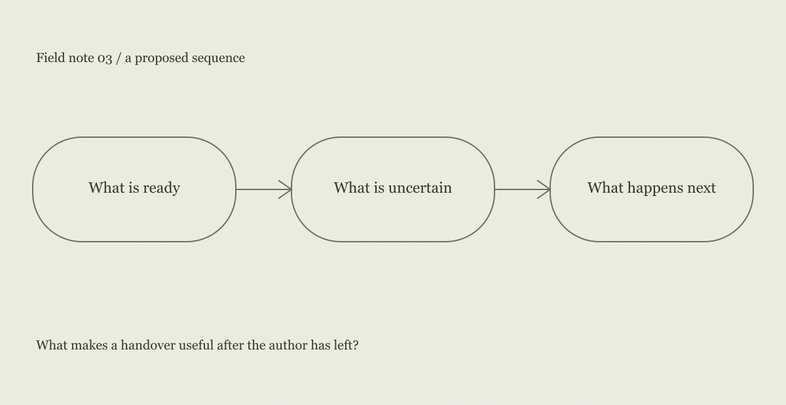

What makes a handover useful after the author has left?
The scene
A fictional repair bench has a half-finished object and a note reading “almost done.” The phrase communicates progress but not what remains. The next person must inspect the object to discover whether the remaining work is cosmetic, structural or waiting for a part.
An interpretation
A useful handover names the uncertainty. It does not need to narrate every action already taken. The most valuable sentence may be “I have not checked this joint yet,” because it prevents the next person from mistaking appearance for completion.

A design proposal
The design proposal is a three-line note: what is ready, what is uncertain, and what to do next. The structure is intentionally plain and can be handwritten. Its purpose is to support judgment rather than replace it with a green status badge.
What this does not establish
The repair scene and notes are fictional examples. This is not a tested safety procedure or professional repair guidance. In a real high-consequence setting, a more formal process and appropriate expertise would be necessary.
The next question
I would compare how people describe the next action after reading several versions of a note. The question is whether the wording preserves the important uncertainty, not whether readers prefer the shortest version.